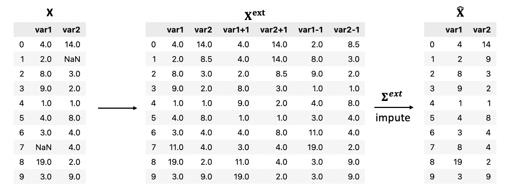

Focus on EM sampler¶
This method allows the imputation of missing values in multivariate data using a multivariate Gaussian model via EM algorithm.
Basics of Gaussians¶
We assume the data \(\mathbf{X} \in \mathbb{R}^{n \times p}\) follows a multivariate Gaussian distribution \(\mathcal{N}(\mathbf{m}, \mathbf{\Sigma})\). Hence, the density of \(\mathbf{x}\) is given by
We define \(\Omega := \{ (i,j) \, | \, X_{ij} \text{ is observed} \}\), and \(\Omega_i := \{ j \, | \, X_{ij} \text{ is observed} \}\). The complementary of these sets are \(\Omega^c := \{ (i,j) \, | \, X_{ij} \text{ is missing} \}\) and \(\Omega_i^c := \{ j \, | \, X_{ij} \text{ is missing} \}\).
Each row \(i\) of the matrix represents a time, \(1 \leq i \leq n\), and each column \(j\) represents a variable, \(1 \leq j \leq m\).
Let \(\mathbf{x}_i \in \mathbb{R}^p\) be an observation, i.e. \(\mathbf{x}_i \overset{iid}{\sim} \mathcal{N}_{\mathbf{x}_i}(\mu, \mathbf{\Sigma})\). We can rearrange the entries of \(\mathbf{x}_i\) such that we can write
Thus formulated, the conditional distributions can be expressed as
Note, that the covariance matrices are the Schur complement of the block matrix.
Recall also the mean of square forms, i.e.
for all square matrices \(\mathbf{A}\).
EM algorithm¶
The EM algorithm is an optimisation algorithm that maximises the “expected complete data log likelihood” by some iterative means under the (conditional) distribution of unobserved components. In this way it is possible to calculate the statistics of interest.
How it works¶
We start with a first estimation \(\mathbf{\hat{X}}\) of \(\mathbf{X}\), obtained via a simple imputation method, i.e. linear interpolation.
the expectation step (or E-step) at iteration t computes:
The maximization step (or M-step) at iteration t finds:
These two steps are repeated until the parameter estimate converges.
Computation¶
At iteration \(\textit{t}\) with \(\theta^{(t)} = (\mu^{(t)}, \mathbf{\Sigma}^{(t)})\), let’s \(\mathbf{x}_i \sim \mathcal{N}_p(\mu, \Sigma)\). The expected log likelihhod is equal to
where \(\hat{\mathbf{x}}_{i}^{(t)} = [\hat{x}_{i1}^{(t)}, ..., \hat{x}_{ip}^{(t)}]\) is the data point such that \(\mathbf{x}_{i\Omega_i^c}^{(t)}\) is replaced by \(\tilde{\mu}_{i}^{(t)}\).
And finally, one has
For the M-step, one has to find \(\theta\) that maximises the previous expression. Since it is concave, it suffices to zeroing the derivatives. For the mean, one has
Therefore
For the variance, one has
where \(\tilde{\mathbf{\Sigma}}_i^{(t)}\) is the \(p \times p\) matrix having zero everywhere expect the \(\Omega_i^c\Omega_i^c\) block replaced by \(\tilde{\mathbf{\Sigma}}_{i,\Omega_i^c}^{(t)}\).
Therefore
We can test the convergence of the algorithm by checking some sort of metric between two consecutive estimates of the means or the covariances (it is assumed to converge since the sequences are Cauchy).
Thus, at each iteration, the missing values are replaced either by their corresponding mean or by smapling from a multivarite normal distribution with fitted mean and variance. The resulting imputed data is the final imputed array, obtained at convergence.
Multivariate time series¶
To explicitely take into account the temporal aspect of the data (temporal correlations), we construct an extended matrix \(\mathbf{X}^{ext}\) by considering the shifted columns, i.e. \(\mathbf{X}^{ext} := [\mathbf{X}, \mathbf{X}^{s+1}, \mathbf{X}^{s-1}]\) where \(\mathbf{X}^{s+1}\) (resp. \(\mathbf{X}^{s-1}\)) is the \(\mathbf{X}\) matrix where all columns are shifted +1 for one step backward in time (resp. -1 for one step forward in time). The covariance matrix \(\mathbf{\Sigma}^{ext}\) is therefore richer in information since the presence of additional (temporal) correlations.
References¶
[1] Borman, Sean. “The expectation maximization algorithm-a short tutorial.” Submitted for publication 41 (2004). (pdf)